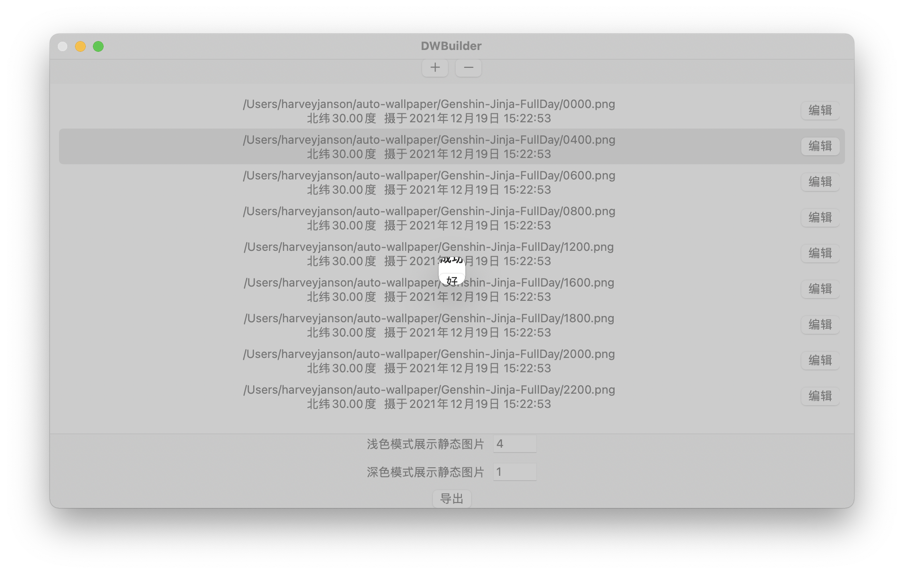
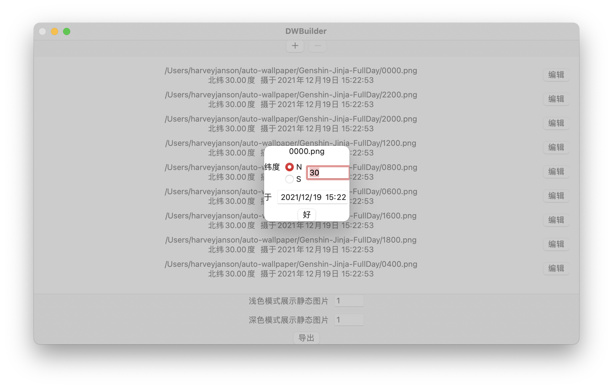
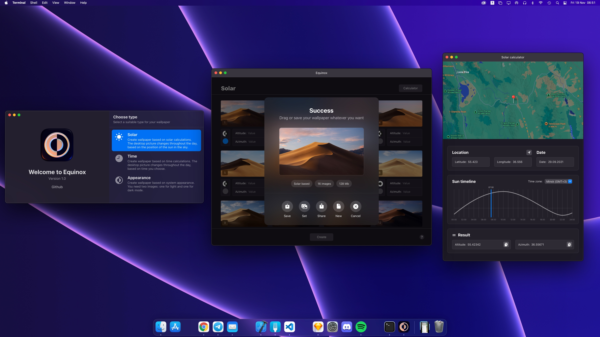
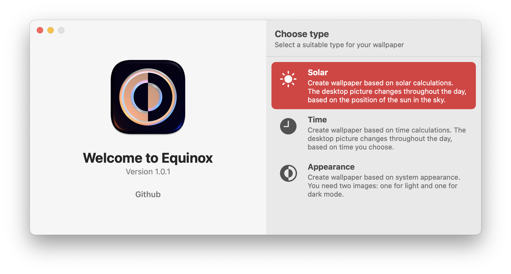
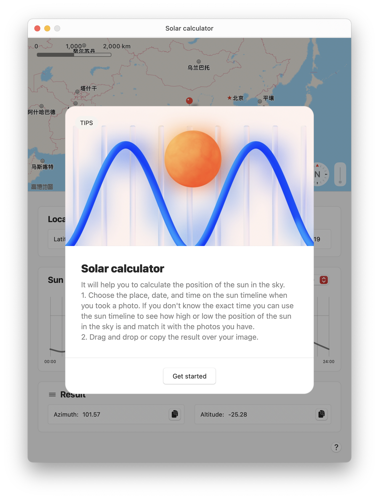

其他制作动态壁纸的方法： DWBuilder 和 Equinox
之前我介绍过 使用 wallpapper 制作动态壁纸，但当时我发现，wallpapper 制作根据时间变换的动态壁纸，存在时间戳与系统不一致的情况，导致壁纸不会按照预期变换。鉴于此，我推荐使用网页端服务，如 Dynamic Wallpaper Club 生成动态壁纸。但网页端服务上传图片一多，或者图片质量一高，效率就非常低了。我现在自用的动态壁纸是九张 2560 * 1300 的图拼成的，原素材体积就有 40 MB +，碰上网络环境不好的时候，上传真的是一种折磨，再加上云端处理照片心里多少还是会有点芥蒂，最好还是能有离线操作的软件。
后来，偶遇了两款软件：DWBuilder 和 Equinox，都可以做到离线生成动态壁纸。
在介绍之前，有必要先介绍一下动态壁纸本身的原理。根据 Marcin Czachurski 对 macOS 自带动态壁纸工作原理的介绍（上 / 下），动态壁纸本身就是一张包含了多张图像及一份只有 macOS 认的元数据的大图像，元数据解码后，发现每张图像都对应类似这样的一组字典值：
1 | <dict> |
其中，a 对应太阳仰角（altitude），z 代表太阳方位角（azimuth），通过这两个值，描述太阳在空中的位置，就能更精确地确定天光和晨昏。基于此，Czachurski 开发了之前介绍的命令行工具 wallpapper——这也正是 DWBuilder 和 Equinox 的基础。
DWBuilder
而 DWBuilder，可以看做是给 wallpapper 套了一层 UI——但也仅限于「一层」而已。这个 UI 风格吧，称不上是事无巨细，至少也算是家徒四壁了，甚至连窗口的缩放都成问题，不调节几下，完全不知道显示了什么。

不过好在，你不需要手动算出一天不同时间内，对应的太阳仰角和方位角是多少；DWBuilder 只需要你输入所在的纬度和图像对应的时间，就能自动算出两角，生成图像。

Equinox
看完了 DWBuilder，Equinox 的界面简直就是从 Windows 98 直接升级 Vista：先不管功能如何，养颜是真的养眼。Equinox 的图标以 iOS / macOS 的暗黑模式图标为灵感来源，整个软件界面也简洁而贴合原生，还支持暗黑模式。


同样基于 wallpapper，Equinox 和专精太阳方位的 DWBuilder 不同，支持系统主题、时间和太阳方位三种模式。前两种都比较直观好懂，不再赘述。为了省去计算太阳方位的麻烦，Equinox 设计了「太阳计算器」（solar calculator），交互非常直接。在地图上选择自己所在的位置，Equinox 就能自动得出经纬度；在结合太阳高度的时间线（横线表示地平线）上拖动，就能更好地构思不同照片显示的时间；最后，只需要将得出的两角粘贴到对应图像的两角值就可以了。

不难看出，这两款图形化软件都在 wallpapper 的基础上做了不少改进，尤其是大幅简化了获取太阳仰角、方位角的过程。而动态壁纸实现的原理本身，也让我们看到了苹果将枯燥复杂的仰角和方位角，隐藏在能反映用户所在位置晨昏状况的动态壁纸中，实现了纯粹技术和用户体验的有机结合。
我已开通 Telegram 频道：本夜朽舎，也开通了同名 newsletter，希望多多订阅。欢迎将您的想法、评论、意见、建议发送至 harveyjanson@icloud.com，请注明「讨论」字样，我会尽量回复。
其他制作动态壁纸的方法： DWBuilder 和 Equinox
http://harveyjanson.github.io/2021/12/19/2021-12-19-dynamic-wallpaper-2/